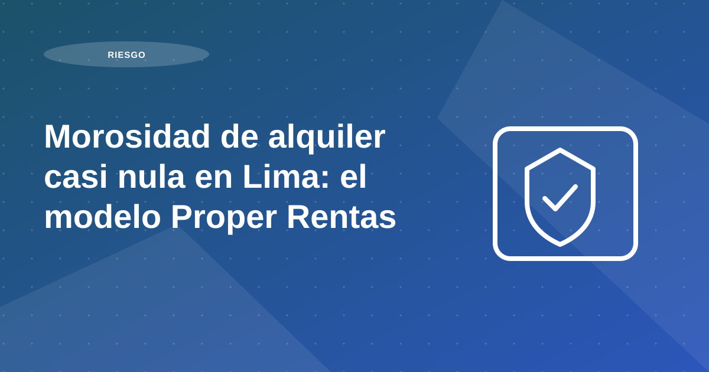

Morosidad de alquiler casi nula en Lima: el modelo Proper Rentas para propietarios que quieren alquilar su departamento sin riesgos

Autor: Equipo Proper Rentas | Revisión: Área de Operaciones y Riesgo (Proper Rentas) | Política editorial · Contacto
Tabla de contenidos
- En resumen
- ¿Qué es la morosidad de alquiler y por qué importa?
- El modelo Proper Rentas: tecnología + criterio de riesgo + administración integral
- ¿Qué incluye la administración integral?
- Resultados: morosidad controlada en un portafolio de gran escala
- Indicador de atraso por días desde el vencimiento (corte: 2025-Q3)
- Cobranza digital: recaudación sin fricciones (y con trazabilidad)
- Selección de inquilinos: la prevención antes del contrato
- Requisitos base
En resumen
La morosidad en alquileres afecta el flujo de caja y aumenta el riesgo de conflictos y costos operativos. En Proper Rentas aplicamos un modelo de selección rigurosa + cobranza digital + administración integral para reducir atrasos prolongados y profesionalizar el alquiler residencial.
Dato interno (corte: 2025-Q3): cartera administrada de más de 700 unidades residenciales en Lima . Bajo la definición de “morosidad prolongada” (atrasos > 30 días), el indicador se mantuvo en niveles prácticamente nulos dentro de la cartera.
- ¿Qué es la morosidad de alquiler y por qué importa?
- El modelo Proper Rentas: tecnología + criterio de riesgo + administración integral
- Resultados: morosidad controlada en un portafolio de gran escala
- Cobranza digital: recaudación sin fricciones
- Selección de inquilinos: la prevención antes del contrato
- Captación masiva y atención inmediata: menos vacancia
Recomendación operativa: estandariza el proceso previo a firma y documenta cada validación. El objetivo no es solo elegir rápido, sino elegir mejor y reducir incidentes posteriores.
¿Qué es la morosidad de alquiler y por qué importa?
En términos prácticos, la morosidad de alquiler es el atraso en el pago de la renta luego de la fecha de vencimiento acordada en el contrato. Aunque parezca un retraso corto, puede impactar directamente en la rentabilidad:
En Lima, el reto no es solo encontrar inquilino: es encontrar al inquilino correcto y cobrar sin fricción .
- Aumenta la incertidumbre y el tiempo de gestión.
- Puede escalar a conflictos y costos operativos o legales.
- Retrasa mantenimiento y reparaciones, afectando el valor del inmueble .
Recomendación operativa: estandariza el proceso previo a firma y documenta cada validación. El objetivo no es solo elegir rápido, sino elegir mejor y reducir incidentes posteriores.
El modelo Proper Rentas: tecnología + criterio de riesgo + administración integral
Proper Rentas opera como PropTech especializada en corretaje y administración integral de propiedades . No nos limitamos a publicar y mostrar inmuebles: gestionamos el activo de punta a punta para que el propietario no se preocupe por la operación diaria.
Recomendación operativa: estandariza el proceso previo a firma y documenta cada validación. El objetivo no es solo elegir rápido, sino elegir mejor y reducir incidentes posteriores.
¿Qué incluye la administración integral?
El objetivo es simple: que el propietario reciba su renta y el inmueble se mantenga en buen estado, preservando y aumentando su valor.
- Cobranza y recaudación de alquiler.
- Atención de incidencias y coordinación de reparaciones.
- Gestión de garantías y control de gastos.
- Reportes operativos/financieros para el propietario.
Recomendación operativa: estandariza el proceso previo a firma y documenta cada validación. El objetivo no es solo elegir rápido, sino elegir mejor y reducir incidentes posteriores.
Resultados: morosidad controlada en un portafolio de gran escala
Al 3er trimestre de 2025 (2025-Q3) , nuestra cartera residencial en Lima (departamentos y edificios completos) supera las 700 unidades . El comportamiento de atraso dentro de la cartera administrada se mantiene bajo y se regulariza rápidamente.
Recomendación operativa: estandariza el proceso previo a firma y documenta cada validación. El objetivo no es solo elegir rápido, sino elegir mejor y reducir incidentes posteriores.
Indicador de atraso por días desde el vencimiento (corte: 2025-Q3)
*~0% indica “prácticamente nulo” bajo la definición de morosidad prolongada (>30 días) en la cartera administrada al corte 2025-Q3.
Interpretación: los pagos tienden a normalizarse sin acumular mora prolongada, protegiendo el ingreso mensual del propietario.
Recomendación operativa: estandariza el proceso previo a firma y documenta cada validación. El objetivo no es solo elegir rápido, sino elegir mejor y reducir incidentes posteriores.
Cobranza digital: recaudación sin fricciones (y con trazabilidad)
La recaudación es 100% digital para reducir fricción y acelerar pagos:
- El inquilino paga desde su celular vía banco, como un servicio recurrente.
- Se envían recordatorios automáticos antes y después del vencimiento.
- El propietario recibe el depósito en su cuenta sin perseguir pagos ni gestiones manuales.
- Todo queda registrado, con mayor transparencia para ambas partes.
Recomendación operativa: estandariza el proceso previo a firma y documenta cada validación. El objetivo no es solo elegir rápido, sino elegir mejor y reducir incidentes posteriores.
Selección de inquilinos: la prevención antes del contrato
La morosidad se reduce antes de firmar . Por eso, la evaluación de inquilinos aplica criterios verificables.
Recomendación operativa: convierte cada obligación del contrato en un control verificable. Mientras más explícitos sean los criterios de pago, mantenimiento y entrega, menor fricción habrá durante la administración.
Requisitos base
- Ingresos formales (planilla o recibos por honorarios).
- Verificación de capacidad de pago según el nivel de renta.
- Revisión de antecedentes y consistencia de información.
Recomendación operativa: estandariza el proceso previo a firma y documenta cada validación. El objetivo no es solo elegir rápido, sino elegir mejor y reducir incidentes posteriores.
Plan de acción recomendado para propietarios
Un buen plan de mitigación de riesgo empieza antes de publicar el inmueble. Primero, define requisitos mínimos de evaluación: capacidad de pago, trazabilidad de ingresos, coherencia documental y antecedentes. Luego, asigna pesos a cada criterio para evitar decisiones por intuición.
En la segunda etapa, estandariza entrevistas, revisión documental y validación de referencias. El objetivo no es solo aprobar o rechazar perfiles, sino crear evidencia suficiente para sustentar la decisión. Cuando el proceso está documentado, se reduce la probabilidad de excepciones mal justificadas.
La tercera etapa es contractual y de seguimiento: reglas de pago claras, penalidades transparentes y protocolo de alertas tempranas. Con esto, el riesgo se gestiona como proceso continuo y no como reacción tardía frente a problemas ya avanzados.
- Definir score mínimo de aprobación.
- Validar consistencia entre ingresos y estilo de vida.
- Documentar evaluación y decisión final.
- Activar alertas de cobranza desde el primer mes.
Errores frecuentes y cómo evitarlos
El principal error es acelerar cierre sin completar validaciones críticas. Una aprobación apresurada puede parecer eficiente en el corto plazo, pero termina elevando morosidad, fricción legal y desgaste operativo.
Otro error es depender exclusivamente de garantías adicionales. Las garantías ayudan, pero no sustituyen un filtro sólido del perfil de pago ni un contrato operativo bien estructurado.
Indicadores para medir resultados mes a mes
Mide tasa de aprobación por fuente, porcentaje de atraso por cohorte de ingreso y tiempo medio de regularización. Estos indicadores permiten identificar dónde se origina el riesgo y qué parte del proceso debe fortalecerse.
Complementa con un indicador de incidencias contractuales por trimestre. Si sube ese valor, normalmente hay desalineación entre evaluación inicial, expectativas del inquilino y términos de administración.
Preguntas frecuentes
¿Cuál es la señal de riesgo más útil antes de firmar?
La consistencia entre ingresos, historial de pago y documentación. Las incoherencias tempranas son alertas clave.
¿Cómo se reduce morosidad sin frenar cierres?
Con filtros objetivos previos, contrato claro y seguimiento desde el primer mes.
¿Sirve pedir más garantías en lugar de evaluar mejor?
No reemplaza una buena evaluación. Las garantías ayudan, pero el filtro inicial sigue siendo el principal control de riesgo.
Conclusión
Al revisar morosidad de alquiler casi nula en lima: el modelo proper rentas para propietarios que quieren alquilar su departamento sin riesgos, la conclusión principal es que la rentabilidad no depende de una sola decisión, sino de la calidad del proceso completo: análisis previo, ejecución comercial, filtro, contrato y administración mensual.
Si priorizas estandarización, medición y mejora continua, reduces vacancia, controlas riesgo y sostienes mejores resultados para tu propiedad en el tiempo.